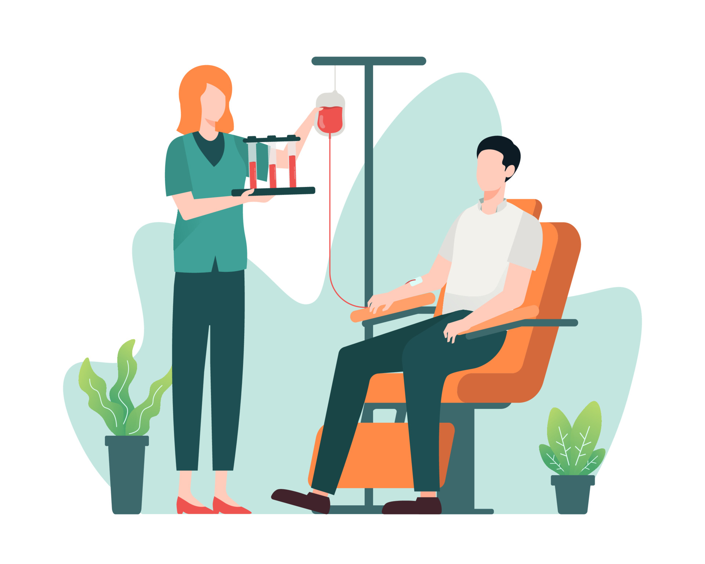
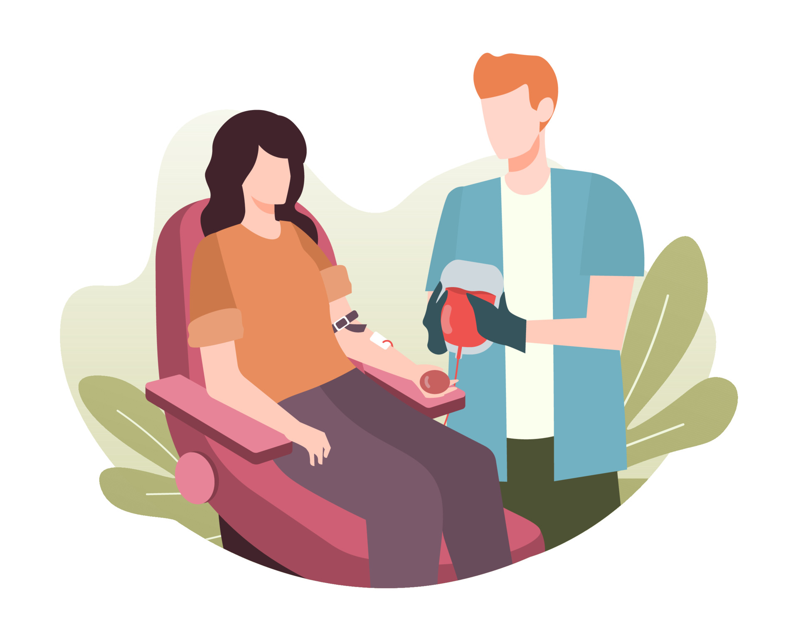

Our nation requires 4 crore Units of Blood while only 40 lakh units are available, Every two seconds someone needs Blood there is no substitute for Human Blood. It Cannot be manufactured Blood donation is an extremly noble deed, yet there is a scarcity of regular donors across India. We focus on creating & expanding a virtual army of blood donating volunteers who could be searched and contacted by family / care givers of a patient in times of need